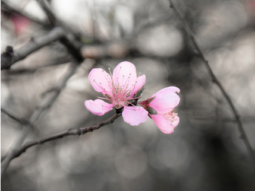
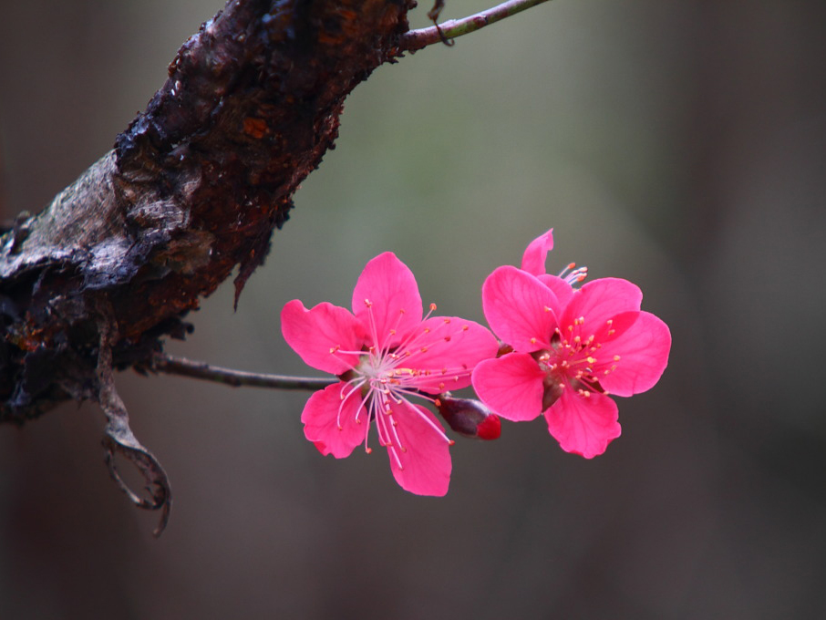

"去年今日此门中，人面桃花相映红。人面不知何处去，桃花依旧笑春风。"
此诗的创作时间，史籍没有明确记载。而唐人孟�ぁ侗臼率�》和宋代《太平广记》则记载了此诗“本事”：崔护到长安参加进士考试落第后，在长安南郊偶遇一美丽少女，次年清明节重访此女不遇，于是题写此诗。这段记载颇具传奇小说色彩，其真实性难以得到其他史料的印证。
全诗四句，这四句诗包含着一前一后两个场景相同、相互映照的场面。第一个场面：寻春遇艳――“去年今日此门中，人面桃花相映红。”诗人抓住了“寻春遇艳”整个过程中最美丽动人的一幕。“人面桃花相映红”，不仅为艳若桃花的“人面”设置了美好的背景，衬出了少女光彩照人的面影，而且含蓄地表现出诗人目注神驰、情摇意夺的情状，和双方脉脉含情、未通言语的情景。第二个场面：重寻不遇。还是春光烂漫、百花吐艳的季节，还是花木扶疏、桃树掩映的门户，然而，使这一切都增光添彩的“人面”却不知何处去，只剩下门前一树桃花仍旧在春风中凝情含笑。
 